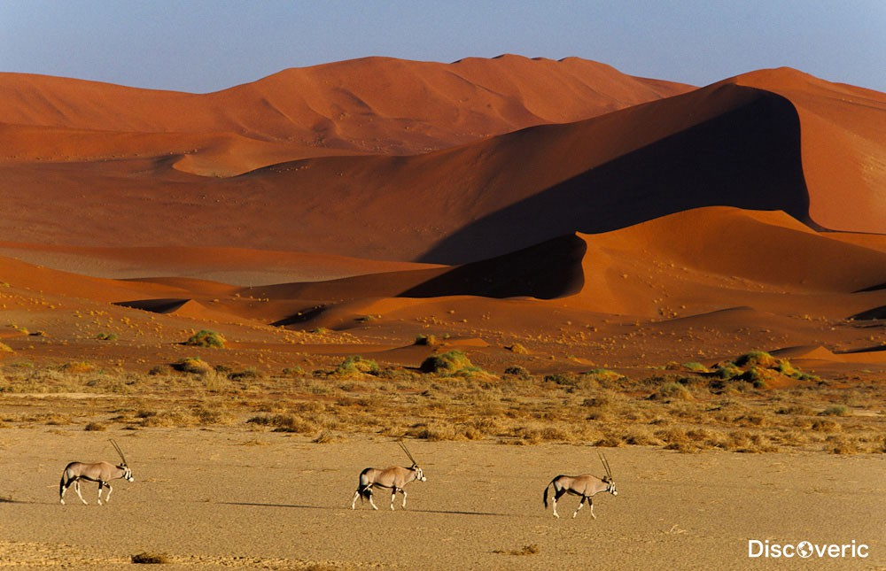

Почему важно наблюдать за звездами?
Наблюдение за звездным небом — это не только увлекательный опыт, но и возможность погрузиться в тайны Вселенной. С каждым взглядом на небо мы осознаём масштаб космоса и чувствуем связь с миром. Вот семь мест, которые подарят вам незабываемые впечатления от наблюдения за звездами.
1. Национальный парк Джаспер, Канада
Джаспер считается одним из крупнейших заповедников тёмного неба в мире. Здесь нет городских огней, и вы можете увидеть Млечный Путь во всей его красе.
2. Обсерватория Мауна-Кеа, Гавайи
Мауна-Кеа — это место, где небо становится невероятно чистым. На высоте более 4 000 метров вы сможете насладиться самыми яркими звёздами.
3. Пустыня Атакама, Чили

Считается самым сухим местом на планете, Атакама предлагает идеальные условия для астрономических наблюдений, благодаря отсутствию осадков и минимальному световому загрязнению.
4. Айорекский космопарк, Австралия
Этот регион, расположенный рядом с Улуру, славится своим чистым небом. Здесь проводятся астрономические экскурсии и лекции под открытым небом.
5. Национальный парк Намиб-Науклуфт, Намибия
Саванны и пустыни Намибии предоставляют прекрасные условия для астрономии. Здесь вы можете увидеть множество звёздных созвездий Южного полушария.
6. Долина Смерти, США
Несмотря на жаркий климат, это одно из лучших мест для наблюдения за ночным небом благодаря удалённости от больших городов.
7. Культурный парк Теиде, Испания
На Канарских островах, в парке Теиде, вы сможете увидеть звёзды на высоте более 2 000 метров. Это популярное место для астротуризма в Европе.